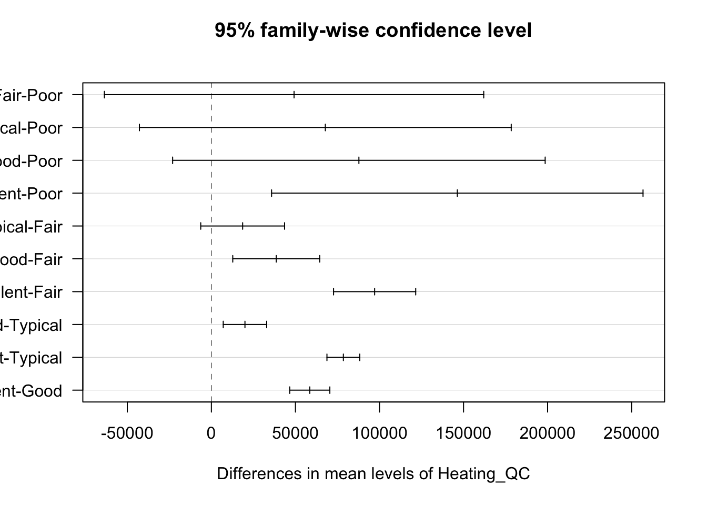
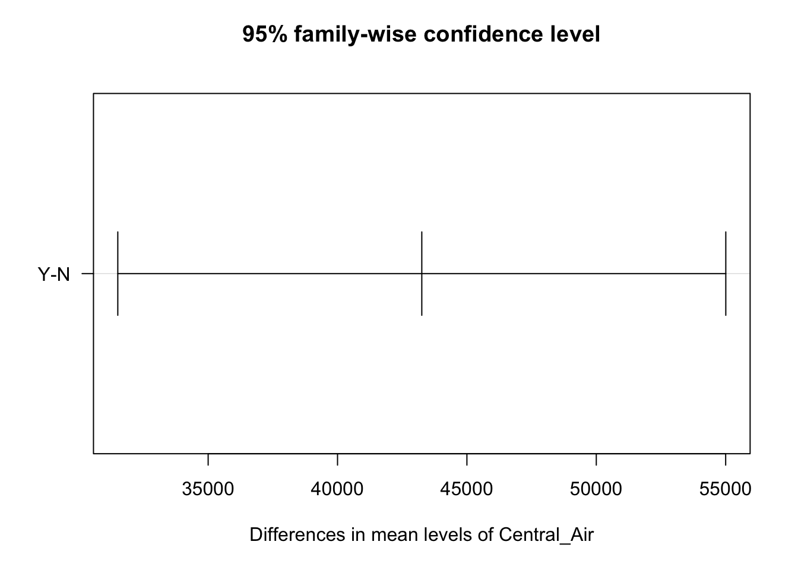
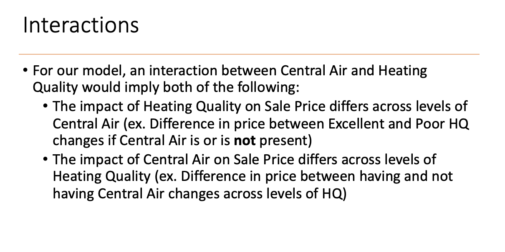

flowchart LR
A[Continuous Target Variable] --> B[One-Way ANOVA]
A --> C[Two-Way ANOVA]
A --> D[n-Way ANOVA]
1 n-Way ANOVA
2 Additional Linear Models Terminology
A model is a mathematical relationship between explanatory variables and response variables.
An effect is the expected change in response that occurs with a change in value of an explanatory variable.
- The main effect is the effect of a single explanatory variable (e.g. \(x_1, x_2, x_3\))
3 Exploring the (Ames) Data
Code
library(tidyverse)
library(AmesHousing)
ames <- make_ordinal_ames()
set.seed(123)
ames <- ames |> mutate(id = row_number())
train <- ames |> sample_frac(0.7)
test <- anti_join(ames, train, by = "id")
dim(train)[1] 2051 82Code
dim(test)[1] 879 82Code
train %>%
group_by(Heating_QC, Central_Air) %>%
summarise(
mean = mean(Sale_Price),
sd = sd(Sale_Price),
max = max(Sale_Price),
min = min(Sale_Price)
)`summarise()` has grouped output by 'Heating_QC'. You can override using the
`.groups` argument.# A tibble: 10 × 6
# Groups: Heating_QC [5]
Heating_QC Central_Air mean sd max min
<ord> <fct> <dbl> <dbl> <int> <int>
1 Poor N 50050 52255. 87000 13100
2 Poor Y 107000 NA 107000 107000
3 Fair N 84748. 28267. 158000 37900
4 Fair Y 145165. 38624. 230000 50000
5 Typical N 103469. 34663. 209500 12789
6 Typical Y 142003. 39657. 375000 60000
7 Good N 110811. 38455. 214500 59000
8 Good Y 160113. 54158. 415000 52000
9 Excellent N 115062. 33271. 184900 64000
10 Excellent Y 216401. 88518. 745000 58500Central_Airseems to have an effect onSale_Price
However, we always need to have statistical proof to back up any claims we make.
4 Two-Way ANOVA Using Ames
With Two-Way ANOVA we are trying to see if the two variables are actually having a significant effect on explaining/predicting sale price.
\[ Y_{ijk} = \mu + \alpha_i + \beta_j + \varepsilon_{ijk} \]
- \(\mu\) is the base level
- \(\alpha_i\) is the heating quality
- \(\beta_j\) is central air
- \(\varepsilon\) is unexplained error
Code
ames_aov2 <- aov(Sale_Price ~ Heating_QC + Central_Air, data = train)
summary(ames_aov2) Df Sum Sq Mean Sq F value Pr(>F)
Heating_QC 4 2.891e+12 7.228e+11 147.60 < 2e-16 ***
Central_Air 1 2.903e+11 2.903e+11 59.28 2.11e-14 ***
Residuals 2045 1.002e+13 4.897e+09
---
Signif. codes: 0 '***' 0.001 '**' 0.01 '*' 0.05 '.' 0.1 ' ' 1- The individual p-values are telling us whether or not the variable has some significant effect on the response
- If these two independent variables are completely independent then the p-values with just the one variable model would be the same
4.1 Post-Hoc Testing
We have statistical differences among the categories and we want to know where these differences exist.
Code
tukey_ames2 <- TukeyHSD(ames_aov2)
print(tukey_ames2) Tukey multiple comparisons of means
95% family-wise confidence level
Fit: aov(formula = Sale_Price ~ Heating_QC + Central_Air, data = train)
$Heating_QC
diff lwr upr p adj
Fair-Poor 49176.42 -63650.448 162003.29 0.7571980
Typical-Poor 67781.01 -42800.320 178362.35 0.4506761
Good-Poor 87753.89 -23040.253 198548.03 0.1945181
Excellent-Poor 146288.89 35818.859 256758.92 0.0028361
Typical-Fair 18604.59 -6326.425 43535.61 0.2484556
Good-Fair 38577.47 12718.894 64436.04 0.0004622
Excellent-Fair 97112.47 72679.867 121545.07 0.0000000
Good-Typical 19972.87 7050.230 32895.52 0.0002470
Excellent-Typical 78507.88 68746.678 88269.07 0.0000000
Excellent-Good 58535.00 46602.229 70467.78 0.0000000
$Central_Air
diff lwr upr p adj
Y-N 43256.57 31508.27 55004.87 0Code
plot(tukey_ames2, las = 1)

diffrefers to the average difference inSale_Pricebetween the two categories
Keep in mind that if you increase your sample size, you should decrease your significance level. P-values always go down with an increase in sample size.
5 Two-Way ANOVA with Interactions
An interaction effect is when the effect of one variable changes as levels of another variables changes (e.g. \(x_1x_2, x_1x_2x_3\)).
Interaction does not mean that two variables are correlated with each other.
In an interaction term \(x_1x_2\), changes in \(x_2\) affect the relationship of \(x_1\) to \(y\) and vice versa.

\[ Y_{ijk} = \mu + \alpha_i + \beta_j + (\alpha\beta)_{ij} + \varepsilon_{ijk} \]
5.1 R Code
Code
ames_aov_int <- aov(Sale_Price ~ Heating_QC * Central_Air, data = train)
summary(ames_aov_int) Df Sum Sq Mean Sq F value Pr(>F)
Heating_QC 4 2.891e+12 7.228e+11 147.897 < 2e-16 ***
Central_Air 1 2.903e+11 2.903e+11 59.403 1.99e-14 ***
Heating_QC:Central_Air 4 3.972e+10 9.930e+09 2.032 0.0875 .
Residuals 2041 9.975e+12 4.887e+09
---
Signif. codes: 0 '***' 0.001 '**' 0.01 '*' 0.05 '.' 0.1 ' ' 1- When you’re looking at significance, make sure to look at the interaction’s significance first.
- If interaction exists, we no longer care if the individual variables are significant or not because it’s the interaction that matters.
5.2 Model Hierarchy
Idea of model hierarchy: If higher-order terms are significant, then we should keep all the main effect terms that are a part of the higher-order terms as well.
5.3 Slicing
If the interaction term was significant, the number of level pairs we would have to consider can be overwhelming. Slicing performs an F-test for means for one variable within the level of another variable.
An example is subsetting the data into Central_Air: Yes and Central_Air: No and then seeing the significance of Heating_QC:
Code
CA_aov <- train %>%
group_by(Central_Air) %>%
nest() %>%
mutate(aov = map(data, ~ summary(aov(Sale_Price ~ Heating_QC, data = .x))))
print(CA_aov$aov)[[1]]
Df Sum Sq Mean Sq F value Pr(>F)
Heating_QC 4 2.242e+12 5.606e+11 108.5 <2e-16 ***
Residuals 1899 9.809e+12 5.165e+09
---
Signif. codes: 0 '***' 0.001 '**' 0.01 '*' 0.05 '.' 0.1 ' ' 1
[[2]]
Df Sum Sq Mean Sq F value Pr(>F)
Heating_QC 4 1.774e+10 4.435e+09 3.793 0.00582 **
Residuals 142 1.660e+11 1.169e+09
---
Signif. codes: 0 '***' 0.001 '**' 0.01 '*' 0.05 '.' 0.1 ' ' 15.4 Assumptions
Same as One-Way ANOVA:
- Independence of observations
- Equality of variance
- Levene Test only available for interactions
- Normality of categories